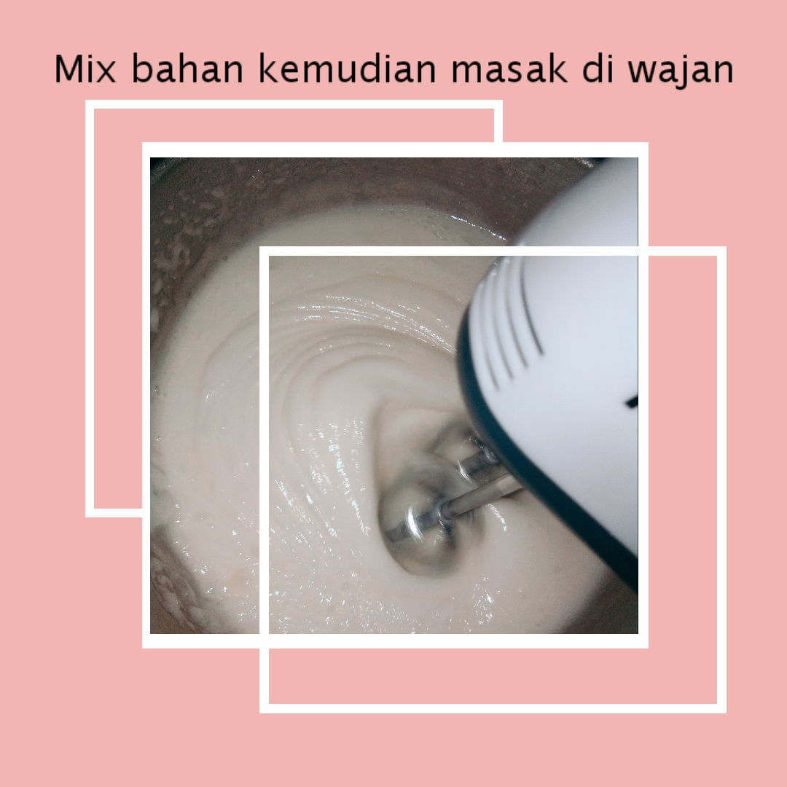
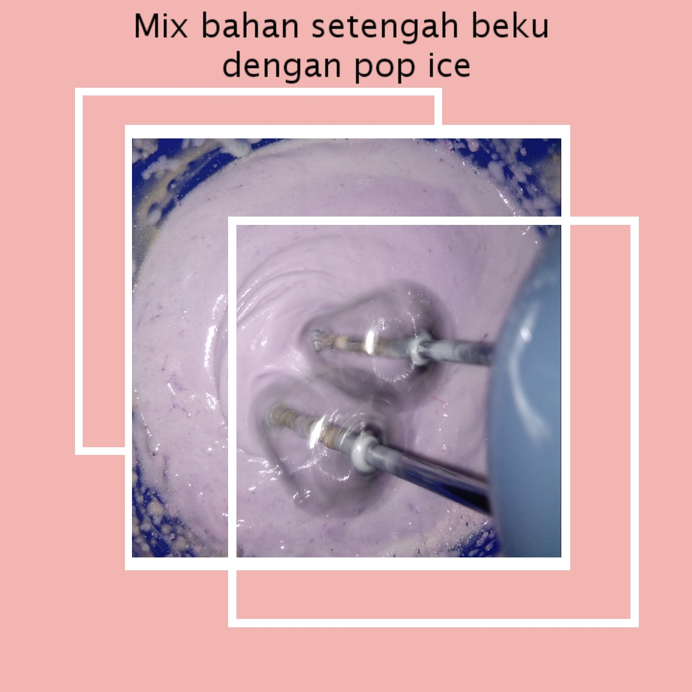
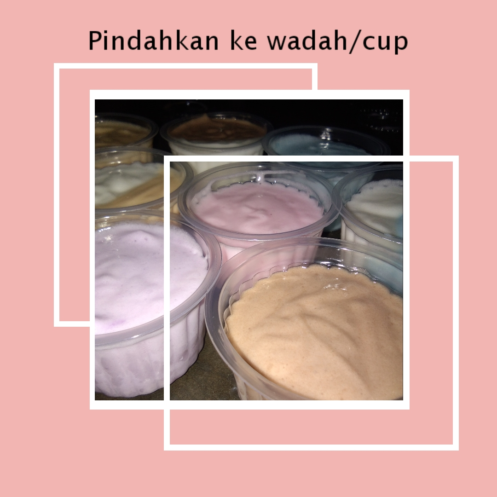
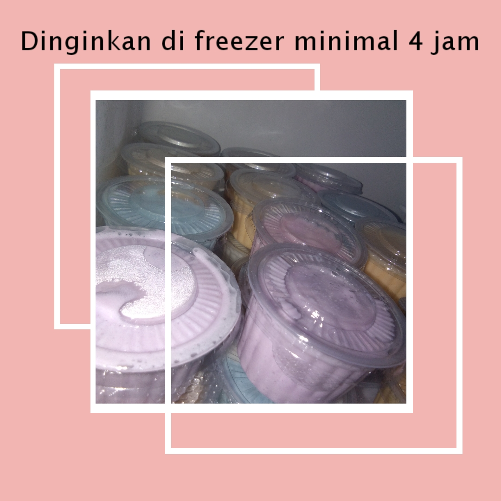
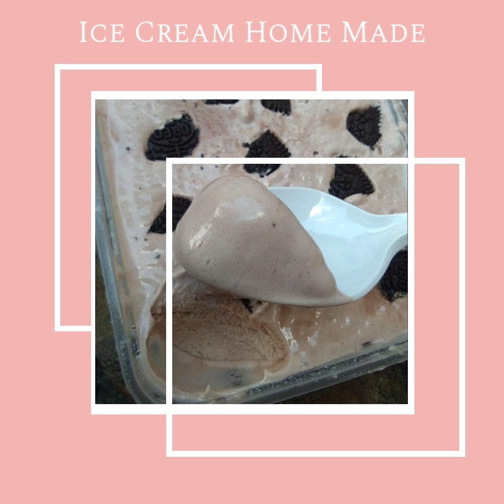

Wanna some relaxing music ? ?
Piano here
Guitar here
Where U go?


Another Related Topic :
Follow us


Introduction...
Lama lama makin sini pandemi bikin tambah suntuk kawan. Banyak hal terhalang untuk dilakuin apalagi saat kepingin nongs sama doi eh malah makin geli geli manja diikuti corona ups.. kalopun ga nongs suntuk pula cuma ngerjain tugas yang ada... Mana makin hari cuaca makin panas aja bikin pala makin panas... eh tiba tiba ujan deres langsung adem banget mana gaada pelukan dari doi kan kasian banget wkwk... daripada gabut mending lakuin kegiatan produktif aja dari rumah. Buat eskrim cocok kayaknya hmmm... oke deh langsung cus aja daripada kelamaan toh eskrim nampaknya nikmat juga daripada beli jadi mending buat aja dah itung itung tambah pengalaman siapa tau aja tiba tiba disuruh calon mertua bantuin masak eaaaa.... oke deh lets cekidot.
Perlu diketahui saat kita ingin membuat eskrim bisanya langsung membeli paket pembelian dari berbagai merek yang tersedia di mini market kawan, namun kali ini kita akan membuatnya dengan bahan yang sering kita jumpai di rumah loh, seperti pop ice. lantas bagaimana membuatnya kalau cuma pop Ice dibekuin jadi es lilin dong?! Begini kawan, kita disini memanfaatkan beberapa bahan lain yang tersedia dirumah loh seperti tepung maizena untuk membentuk tekstur eskrimnya, gula sebagai pemanisnya dan kental manis untuk memperkaya rasa di eskrim yang akan kita buat nanti. lantas gimana cara kita mengolah bahan bahan tadi untuk dijadikan eskrim? oke deh cekidot.
pertama tama kita perlu menyiapkan bahan terlebih dahulu, untuk takaran bahan kawan kawan bisa menyesuikan akan membuat eskrim sebanyak yang diinginkan dan rasa yang diinginkan sesuai selrera kawan kawan loh.berikut takaran yang biasa ku gunakan untuk membuat eskrim:
- 3 sachet pop ice rasa sesuai selera
- 3 sachet susu kental manis vanilla
- 3 sdm tepung maizena
- 5 sdm gula pasir
- 1 sdm sp
- 500 ml air matang
- Topping biskuit/misis atau lainnya
untuk alat yang digunakan pun cukup sederhana kawan seperti:
- Wajan
- Kompor
- Sutil/Alat pengaduk
- Mixer bisa menggunkan blender
- Cup Ice Cream atau wadah plastik

Langkah pertama yang dilakukan ialah mencampur susu kental manis, tepung maizena, gula pasir, dan air ke dalam wajan
Masak adonan tersebut diatas kompor dengan api sedang, sambil terus diaduk sampai adonan mengental dan mendidih
Setelah dimasak hingga adonan mengental dan mendidih kemudian dinginkan adonan didalam freezer selama 30-40 menit

setelah adonan selesai didinginkan, masukkan sp dan popice kedalam adonan kemudian campurkan adonan menggunakan
mixer selama 20-25 menit sampai adonan mengembang.


setelah adonan dirasa cukup mengembang adonan siap dipindahkan kedalam wadah yang telah disediakan kemudian tambahkan
toping sesuai selera. setelah selesai kemudian simpan dalam freezer selama kurang lebih 4 jam

keluarkan dari freezer ,eskrim home made siap disajikan dan dimakan
Kesimpulan~
Jadi ya seperti ini eskrim home made yang dibuat dari bahan bahan sederhana. Sangat cocok dinikmati siang siang begini apalagi sambil disuapin doi eh wkwkwk:).Tentu lebih sehat juga kawan karena kita sendiri yang ngebuatnya dan bahan bahannya pun kita tau semua dan sangat mudah dijumpai. Rasanya pun tidak kalah dengan eskrim merek sebelah loh... eits tentunya juga lebih murah dan dapat mengobati suntuknya kawan kawan semua.
Tapi jangan mentang mentang eskrimnya lebih sehat kita bisa makan terus kawan, kita juga harus selalu menjaga kesehatan loh siapa tau aja tiba tiba drop kan mubadzir eskrimnya gajadi dimakan.